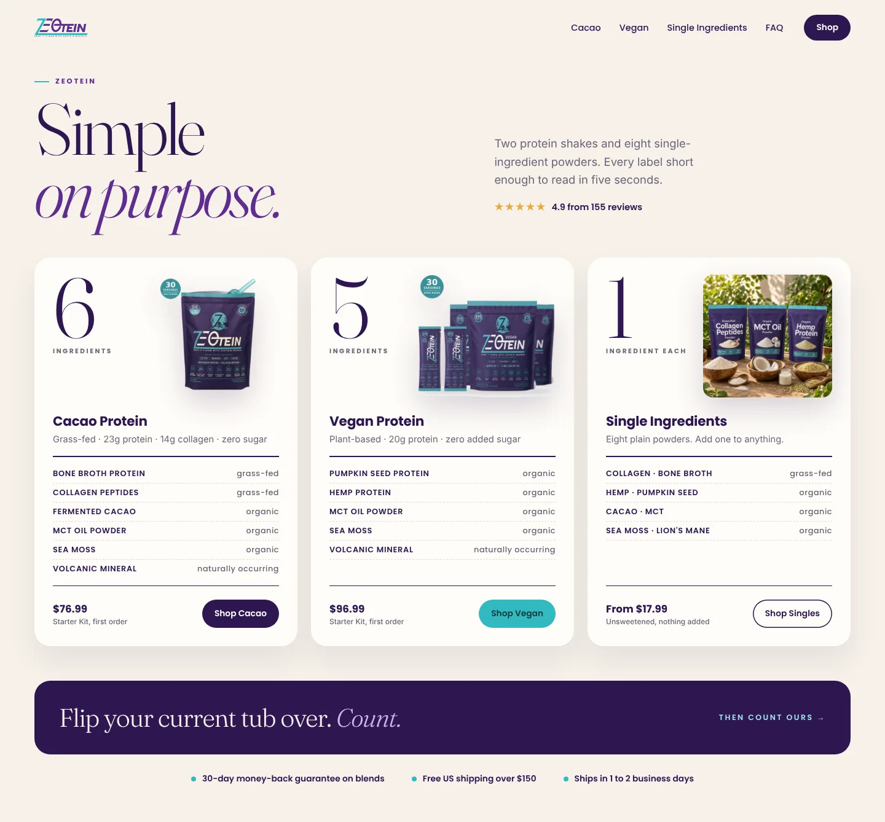
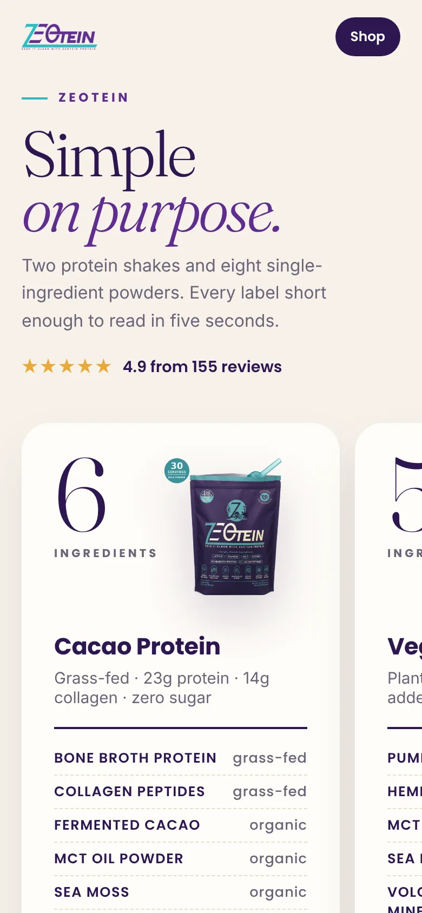
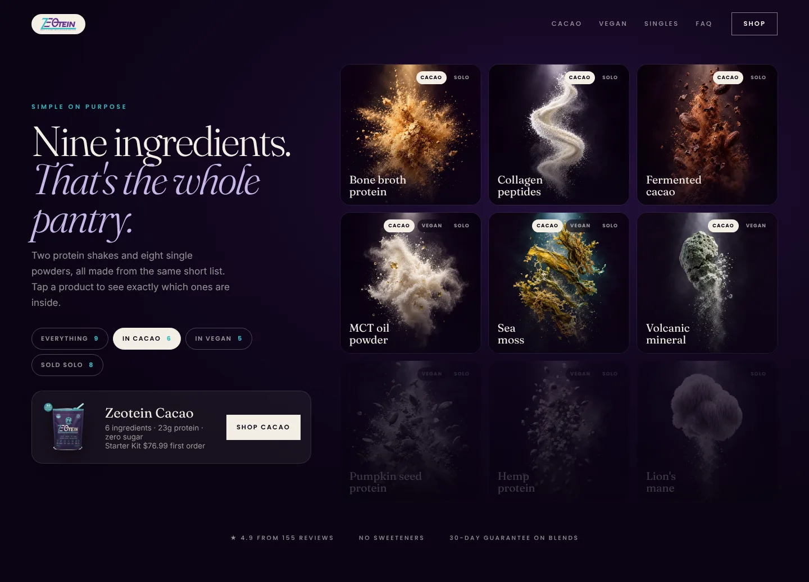
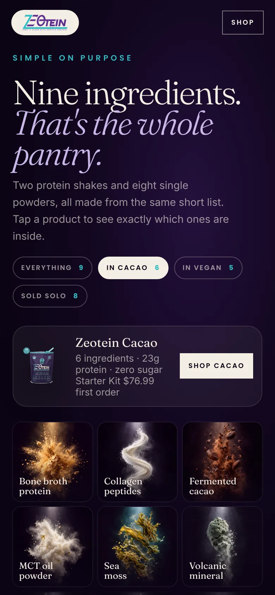
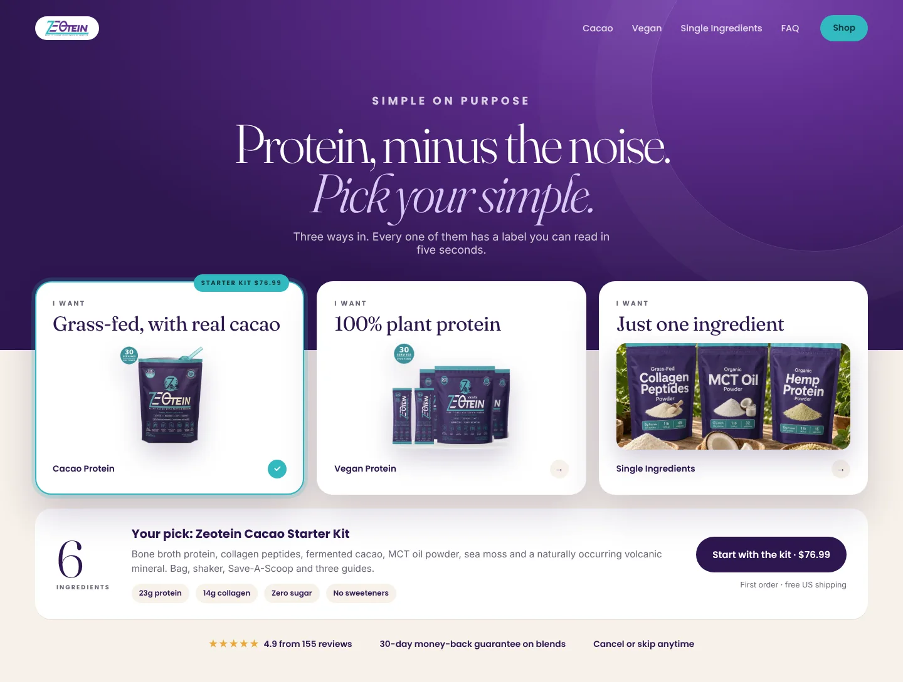
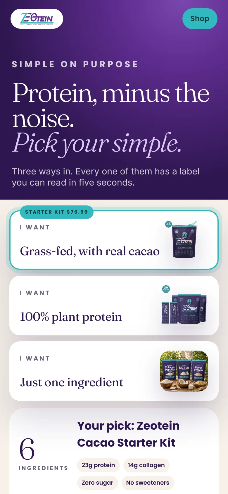
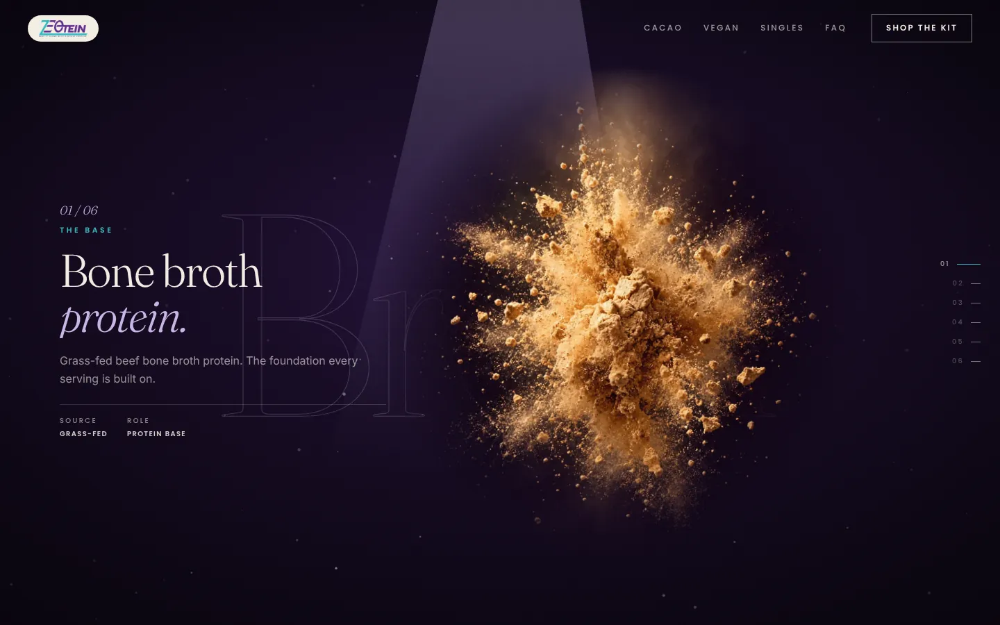

<title>Zeotein Homepage Concepts</title>
<meta name="claude:viewport-fit-sides" content="cover">
<link rel="stylesheet" href="https://fonts.googleapis.com/css2?family=Fraunces:ital,opsz,wght@0,9..144,300;0,9..144,400;1,9..144,300;1,9..144,400&family=Inter:wght@400;500;600&family=Poppins:wght@500;600;700&display=swap">
<style>
/* Layout: a design review board. Plum masthead, then one wide band per concept (desktop comp + phone comp + the case for it), then the recommended page flow. Single light look by choice. */
:root{
  --bg:#F3EEE6; --paper:#FFFDF9; --ink:#1F1530; --plum:#2E1650; --purple:#5F2D90; --teal:#32BAC0; --teal-ink:#0F6E73;
  --mute:#625A70; --line:#E2D8CA; --mast:#1A0B2E; --mast-fg:#F4EEE4; --mast-mute:rgba(244,238,228,.66); --warn:#9A5B12; --warn-bg:#FBF1E2;
  --serif:"Fraunces",Georgia,"Times New Roman",serif; --head:"Poppins",system-ui,sans-serif; --sans:"Inter",system-ui,-apple-system,sans-serif;
  color-scheme:light;
}
body{background:var(--bg);color:var(--ink);font-family:var(--sans);font-size:16px;line-height:1.6;-webkit-font-smoothing:antialiased}
.in{max-width:1180px;margin:0 auto;padding-left:max(20px,env(safe-area-inset-left,0px));padding-right:max(20px,env(safe-area-inset-right,0px))}
h1,h2,h3{text-wrap:balance}
.mast{background:var(--mast);color:var(--mast-fg);margin-top:calc(-1 * env(safe-area-inset-top,0px));padding-top:env(safe-area-inset-top,0px)}
.mast .in{padding-block:64px 56px;display:grid;grid-template-columns:1.3fr 1fr;gap:48px;align-items:end}
.eb{font-family:var(--head);font-weight:600;font-size:.72rem;letter-spacing:.24em;text-transform:uppercase;color:var(--teal)}
.mast h1{margin-top:14px;font-family:var(--serif);font-weight:300;font-size:clamp(2.6rem,6vw,4.6rem);line-height:.95;letter-spacing:-.035em}
.mast h1 i{color:#C9B6E8}
.mast p{color:var(--mast-mute);max-width:46ch}
.brief{display:grid;grid-template-columns:repeat(3,1fr);gap:1px;background:rgba(244,238,228,.14);border-radius:14px;overflow:hidden;margin-top:28px}
.brief div{background:var(--mast);padding:16px 18px}
.brief b{display:block;font-family:var(--serif);font-weight:400;font-size:1.9rem;line-height:1}
.brief span{display:block;margin-top:6px;font-family:var(--head);font-size:.66rem;letter-spacing:.16em;text-transform:uppercase;color:var(--mast-mute)}

.concept{padding-block:64px;border-bottom:1px solid var(--line)}
.chead{display:flex;flex-wrap:wrap;align-items:baseline;gap:8px 18px}
.chead .tag{font-family:var(--head);font-weight:600;font-size:.7rem;letter-spacing:.2em;text-transform:uppercase;color:var(--purple)}
.chead h2{font-family:var(--serif);font-weight:300;font-size:clamp(2rem,4vw,3rem);line-height:1;letter-spacing:-.03em;color:var(--plum);flex-basis:100%}
.chead h2 i{color:var(--purple)}
.chead p{font-size:1.05rem;color:var(--mute);max-width:62ch}
.shots{display:grid;grid-template-columns:minmax(0,1fr) 230px;gap:22px;margin-top:28px;align-items:start}
.frame{background:var(--paper);border-radius:14px;padding:10px;box-shadow:0 1px 0 var(--line),0 18px 40px rgba(46,22,80,.10)}
.frame .bar{display:flex;gap:6px;padding:2px 4px 10px}
.frame .bar i{width:9px;height:9px;border-radius:50%;background:var(--line)}
.frame img{display:block;width:100%;height:auto;border-radius:6px}
.phone{background:#140A22;border-radius:30px;padding:9px;box-shadow:0 18px 40px rgba(46,22,80,.18)}
.phone img{display:block;width:100%;height:auto;border-radius:22px}
.cap{margin-top:8px;font-family:var(--head);font-size:.64rem;letter-spacing:.16em;text-transform:uppercase;color:var(--mute);text-align:center}
.why{display:grid;grid-template-columns:repeat(3,minmax(0,1fr));gap:22px;margin-top:30px}
.why h3{font-family:var(--head);font-weight:600;font-size:.74rem;letter-spacing:.18em;text-transform:uppercase;color:var(--plum);margin-bottom:10px}
.why ul{list-style:none;display:grid;gap:8px}
.why li{position:relative;padding-left:16px;font-size:.95rem;color:var(--ink)}
.why li::before{content:"";position:absolute;left:0;top:.62em;width:7px;height:7px;border-radius:50%;background:var(--teal)}
.why .risk li::before{background:var(--warn)}
.why .fit p{font-size:.95rem}

.rec{background:var(--paper);padding-block:72px}
.rec h2{font-family:var(--serif);font-weight:300;font-size:clamp(2.2rem,4.6vw,3.4rem);line-height:1;letter-spacing:-.03em;color:var(--plum);margin-top:12px}
.rec h2 i{color:var(--purple)}
.rec .lead{margin-top:14px;font-size:1.08rem;color:var(--mute);max-width:64ch}
.flow{display:grid;gap:14px;margin-top:34px;counter-reset:s}
.step{display:grid;grid-template-columns:44px 170px minmax(0,1fr);gap:20px;align-items:center;padding:16px;border:1px solid var(--line);border-radius:14px;background:var(--bg)}
.step .n{font-family:var(--serif);font-size:2rem;line-height:1;color:var(--purple);text-align:center}
.step img{width:170px;height:96px;object-fit:cover;object-position:top;border-radius:8px;display:block}
.step b{display:block;font-family:var(--head);font-weight:600;font-size:1rem;color:var(--plum)}
.step span{display:block;font-size:.93rem;color:var(--mute);margin-top:2px}
.test{margin-top:34px;display:grid;grid-template-columns:repeat(2,minmax(0,1fr));gap:18px}
.box{border-radius:14px;padding:20px 22px;background:var(--bg);border:1px solid var(--line)}
.box h3{font-family:var(--head);font-weight:600;font-size:.74rem;letter-spacing:.18em;text-transform:uppercase;color:var(--teal-ink)}
.box p{margin-top:8px;font-size:.95rem}
.box.w{background:var(--warn-bg);border-color:#EED7B4}.box.w h3{color:var(--warn)}
footer{padding-block:28px 48px;font-size:.85rem;color:var(--mute)}

@media (max-width:820px){
  .mast .in{grid-template-columns:1fr;gap:18px;padding-block:44px 40px}
  .shots{grid-template-columns:1fr}.phone{max-width:240px;margin:0 auto}
  .why,.test{grid-template-columns:1fr}
  .step{grid-template-columns:34px minmax(0,1fr)}.step img{display:none}
}
@media (max-width:480px){.brief b{font-size:1.4rem}.brief div{padding:12px}}
</style>

<header class="mast"><div class="in">
  <div>
    <p class="eb">Homepage directions &middot; for discussion</p>
    <h1>Simple <i>on purpose.</i></h1>
  </div>
  <div>
    <p>The homepage has one job: get three kinds of shopper to the right product fast, and make "short label" the reason to buy. Three ways to do it, then the version I'd build.</p>
    <div class="brief"><div><b>6</b><span>Cacao</span></div><div><b>5</b><span>Vegan</span></div><div><b>1</b><span>Each single</span></div></div>
  </div>
</div></header>

<section class="concept"><div class="in">
  <div class="chead"><span class="tag">Concept 1</span><h2>The Short <i>List</i></h2><p>The ingredient count is the hero. All three products sit side by side as label cards, each with a big number (6, 5, 1) and the full ingredient list in plain view.</p></div>
  <div class="shots">
    <div><div class="frame"><div class="bar"><i></i><i></i><i></i></div></div><p class="cap">Desktop</p></div>
    <div><div class="phone"></div><p class="cap">Phone, cards swipe sideways</p></div>
  </div>
  <div class="why">
    <div><h3>Why it converts</h3><ul><li>Every product and its price is visible above the fold, so nobody has to hunt.</li><li>The difference from other brands is literal: count the lines.</li><li>One clear button per product goes straight to its page.</li></ul></div>
    <div class="risk"><h3>Watch out</h3><ul><li>Calm and editorial, with less wow on first load.</li><li>Three equal cards don't push the Cacao Starter Kit as hard as one hero would.</li></ul></div>
    <div class="fit"><h3>Best for</h3><p>Returning visitors and comparison shoppers who already know they want a clean protein.</p></div>
  </div>
</div></section>

<section class="concept"><div class="in">
  <div class="chead"><span class="tag">Concept 2</span><h2>The Whole <i>Pantry</i></h2><p>The cinematic look you liked, applied to the whole brand. Every ingredient Zeotein uses fits on one screen: nine tiles. Tap Cacao, Vegan or "Sold solo" and the tiles that aren't in it dim.</p></div>
  <div class="shots">
    <div><div class="frame"><div class="bar"><i></i><i></i><i></i></div></div><p class="cap">Desktop, "In Cacao" selected</p></div>
    <div><div class="phone"></div><p class="cap">Phone</p></div>
  </div>
  <div class="why">
    <div><h3>Why it converts</h3><ul><li>"Nine ingredients, that's the whole pantry" is a claim nobody else in protein can make.</li><li>The filter is a small game: tapping it teaches the product line in seconds.</li><li>Strongest brand moment, and the most shareable screenshot.</li></ul></div>
    <div class="risk"><h3>Watch out</h3><ul><li>The headline has to stay true. If a new single launches (say the Zeolite Powder hold lifts), the number changes.</li><li>Dark sites can feel less "food". Keep the product photos bright.</li></ul></div>
    <div class="fit"><h3>Best for</h3><p>Brand and social traffic, first-time visitors, and as the second section of the homepage.</p></div>
  </div>
</div></section>

<section class="concept"><div class="in">
  <div class="chead"><span class="tag">Concept 3</span><h2>Pick Your <i>Simple</i></h2><p>A guided chooser in brand purple. Three big "I want" choices, and picking one opens a result card with the right kit, its ingredient count, stats and one buy button.</p></div>
  <div class="shots">
    <div><div class="frame"><div class="bar"><i></i><i></i><i></i></div></div><p class="cap">Desktop, Cacao picked</p></div>
    <div><div class="phone"></div><p class="cap">Phone, choices stack</p></div>
  </div>
  <div class="why">
    <div><h3>Why it converts</h3><ul><li>One decision instead of a menu. Guided choosers cut choice overload, the main reason multi-product homepages leak.</li><li>The result card always ends on a single priced button ("Start with the kit · $76.99").</li><li>Works best on phones, where most ad traffic lands.</li></ul></div>
    <div class="risk"><h3>Watch out</h3><ul><li>Least "brand story" of the three; it leans on the sections below to build trust.</li><li>Needs the on-site cart wired to each result.</li></ul></div>
    <div class="fit"><h3>Best for</h3><p>Paid traffic, and anyone who arrives not knowing which product is for them.</p></div>
  </div>
</div></section>

<section class="rec"><div class="in">
  <p class="eb">My recommendation</p>
  <h2>Use all three, <i>in this order.</i></h2>
  <p class="lead">They aren't competing ideas. Each one is the right tool for a different part of the scroll: decide fast, then believe it, then compare.</p>
  <div class="flow">
    <div class="step"><span class="n">1</span><div><b>Hero: Pick Your Simple</b><span>The first screen asks one question and ends in a priced button. This is where conversion is won or lost.</span></div></div>
    <div class="step"><span class="n">2</span><div><b>The Whole Pantry</b><span>The wow moment, and proof of "simple on purpose". Every tile links to the product it belongs to.</span></div></div>
    <div class="step"><span class="n">3</span><div><b>The Short List cards + "Flip your tub over. Count."</b><span>The side-by-side comparison for anyone still deciding, then reviews, guarantee and FAQ as today.</span></div></div>
    <div class="step"><span class="n">4</span><div><b>The Anatomy scroll lives on the Cacao page</b><span>The cinematic six-chapter story from last round becomes the Cacao product page's opener, not the homepage.</span></div></div>
  </div>
  <div class="test">
    <div class="box"><h3>How to prove it</h3><p>Run the new hero against today's photo hero on Google traffic for two weeks. Judge it on clicks through to a product page and on Starter Kit adds to cart, not on time on page.</p></div>
    <div class="box w"><h3>Before anything ships</h3><p>The ingredient photos are AI-generated studio shots, not product photography. That's fine for ingredients, but they should never stand in for the bag. The nine-ingredient count assumes Zeolite Powder stays on hold.</p></div>
  </div>
</div></section>

<footer class="in">Mockups use real Zeotein prices, product photos and approved copy rules (23g is Cacao only, Vegan is 20g, "first order", rating line 4.9 from 155 reviews). Nothing here is live.</footer>
